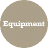

The Swift Difference: Our Story
Swift is committed to providing more rewarding career opportunities for our drivers. This is the Swift Difference and it includes:
Our Customers
Swift is proud to be able to haul freight for some of the most respected companies in the world. They enable us to provide the freight and the miles for our drivers to become financially successful. In turn, our exceptional drivers have allowed us to win many "Carrier of the Year" awards from such companies as:
Wal-Mart · Quaker Oats · Ryder Logistics
FedEx · Target · Dollar Tree · Lowe's · Rite Aid
Swift dispatchers go through "Driver Management 101" to learn how to work one-on-one with drivers. Our ratio of dispatchers to drivers is generally 1:40.
Home TimeSwift over-the-road drivers are typically out for 10-14 days at a time. Regional drivers home time varies based on freight demand. Days off for all Swift drivers are accumulated as 1 day off for every 6 days of driving.
EquipmentSwift uses late model Freightliner and Volvo tractors—92% of which are less than five years old.
FreightSwift transports a variety of freight from retail to industrial materials—the majority of which is no touch and drop & hook. Our divisions include: Convention Services, Container, Dedicated, Flatbed, Heavy Haul, Intermodal, Refrigerated and Dry Van.
AccessorialsSwift company drivers can earn extra pay for any of the following: detention; extra pick-up and drop-off; layovers; breakdown; loading; unloading; local work; tarp pay; wallboard; shrink wrap; hand pallet jack; driver assist load/unload; cleating, choking, bracing; rolls/cans/roll off; throwing pallets. Line haul drivers can also earn a bonus every month they drive 9,500 miles or more.
As North America's leading truckload carrier, Swift has the freight and the miles to enable our truckers to reach their financial goals.
TechnologyEach Swift truck features Qualcomm on-board computers. They provide wireless communications that help improve driver and dispatcher productivity, reduce fuel consumption and improve customer service. We also employ TrailerTRACS to help locate trailers and improve utilization of trailer assets. In addition to our Micro Mapping application, our planners are able to optimally assign truckloads to drivers.
Mentor ProgramsSwift dispatchers go through "Driver Management 101" to learn how to work one-on-one with drivers. Our ratio of dispatchers to drivers is generally 1:40. Learn more about being a mentor at Swift.
Swift History
Swift Transportation began operations in 1966 by transporting imported steel through the ports of Los Angeles to Arizona, and cotton for export from Arizona through Southern California.
Swift HistoryJerry Moyes, founder and former president, began with the same entrepreneurial, can-do spirit that is one of Swift's core values today. The original operation was conducted under the name of Common Market. Operating authority was purchased from a descendant of the Swift Meat Packing family, hence, today's name of Swift Transportation. Jerry, along with his father, brother and a partner took on the typical challenges of a start-up business and turned the company into a $25 million organization by 1984. With the passing of Jerry's father, Carl Moyes, Jerry became the sole owner. By 1990, Swift had grown to a $125 million carrier with 800 trucks. Currently, Swift generates approximately $3.2 billion in revenue and operates over 17,000 trucks. Swift's significant revenue growth is attributable to internal growth with existing customers, as well as acquisition. Since 1988, Swift has acquired 11 different motor carriers.
Swift's terminal network has grown to 37 full service facilities in both the continental United States and Mexico. Swift owns 100% of Trans-Mex, a Nuevo Laredo, Mexico-based carrier. Swift offers border-crossing services at all major Mexican border crossings and also maintains a presence in every Canadian province.
Swift Transportation had its first public offering in 1990.
Swift Fast Facts:
Swift employs approximately 22,000 dedicated professionals, including roughly 17,000 skilled drivers.
Swift has over 17,000 Volvo and Freightliner tractors—92% of which are less than five years old. In addition, Swift has more than 48,000 dry vans and 1,400 flatbed trailers at its disposal.
Swift trucks haul freight over two billion miles per year.
31 full-service terminals throughout the United States.
In 2005, Swift generated approximately $3.2 billion in revenue resulting in a net profit of more than $101 million.